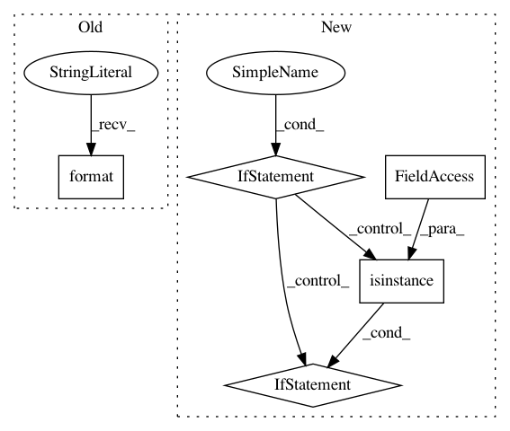

72e735a98644b76208d558c0b85150190594c5b1,statsmodels/tsa/tsatools.py,,add_trend,#,17
Before Change
if np.any(col_const):
if has_constant == "raise":
msg = "x contains a constant. Adding a constant with " \
"trend="{0}" is not allowed.".format(trend)
raise ValueError(msg)
elif has_constant == "skip":
columns = columns[1:]
trendarr = trendarr[:, 1:]
After Change
if np.any(col_const):
if has_constant == "raise":
if x.ndim == 1:
base_err = "x is constant."
else:
columns = np.arange(x.shape[1])[col_const]
if isinstance(x, pd.DataFrame):
columns = x.columns
const_cols = ", ".join([str(c) for c in columns])
base_err = (
"x contains one or more constant columns. Column(s) "
f"{const_cols} are constant."
)
msg = (
f"{base_err} Adding a constant with trend="{trend}" is not allowed."
)
raise ValueError(msg)
In pattern: SUPERPATTERN
Frequency: 3
Non-data size: 5
Instances
Project Name: statsmodels/statsmodels
Commit Name: 72e735a98644b76208d558c0b85150190594c5b1
Time: 2020-06-28
Author: kevin.sheppard@gmail.com
File Name: statsmodels/tsa/tsatools.py
Class Name:
Method Name: add_trend
Project Name: tensorflow/models
Commit Name: 2d34259281a6251cbdc67103ce8a1310010b8ceb
Time: 2020-10-05
Author: dhr@google.com
File Name: orbit/controller.py
Class Name: Controller
Method Name: __init__
Project Name: lovit/soynlp
Commit Name: 09a047ea95170bd08102b7b20e601334d583330a
Time: 2018-11-09
Author: soy.lovit@gmail.com
File Name: soynlp/noun/_noun_ver2.py
Class Name: LRNounExtractor_v2
Method Name: train